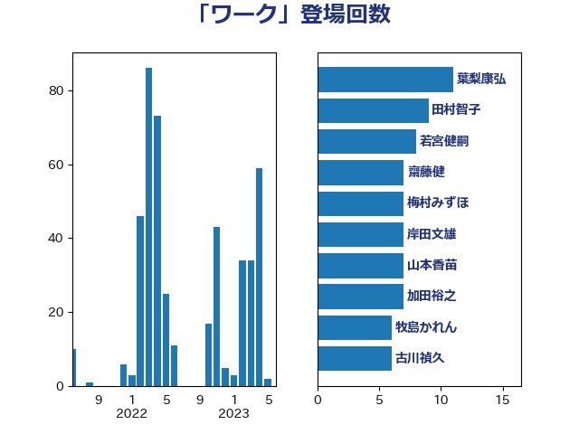

単語「ワーク」

| 葉梨康弘 | 自由民主党 | 11 回 |
| 田村智子 | 日本共産党 | 9 回 |
| 若宮健嗣 | 自由民主党 | 8 回 |
| 齋藤健 | 自由民主党 | 7 回 |
| 梅村みずほ | 日本維新の会 | 7 回 |
| 岸田文雄 | 自由民主党 | 7 回 |
| 山本香苗 | 公明党 | 7 回 |
| 加田裕之 | 自由民主党 | 7 回 |
| 牧島かれん | 自由民主党 | 6 回 |
| 古川禎久 | 自由民主党 | 6 回 |
| 西村明宏 | 自由民主党 | 5 回 |
| 西村康稔 | 自由民主党 | 5 回 |
| 倉林明子 | 日本共産党 | 5 回 |
| 阿部知子 | 立憲民主党 | 4 回 |
| 福田昭夫 | 立憲民主党 | 4 回 |
| 松本剛明 | 自由民主党 | 4 回 |
| 杉本和巳 | 日本維新の会 | 4 回 |
| 打越さく良 | 立憲民主党 | 4 回 |
| 後藤茂之 | 自由民主党 | 4 回 |
| 山際大志郎 | 自由民主党 | 4 回 |
| 仁木博文 | 無所属 | 4 回 |
| 一谷勇一郎 | 日本維新の会 | 4 回 |
| 阿部司 | 日本維新の会 | 3 回 |
| 長友慎治 | 国民民主党 | 3 回 |
| 鈴木俊一 | 自由民主党 | 3 回 |
| 谷合正明 | 公明党 | 3 回 |
| 萩生田光一 | 自由民主党 | 3 回 |
| 猪口邦子 | 自由民主党 | 3 回 |
| 深澤陽一 | 自由民主党 | 3 回 |
| 浅野哲 | 国民民主党 | 3 回 |
| 杉久武 | 公明党 | 3 回 |
| 高橋千鶴子 | 日本共産党 | 2 回 |
| 須藤元気 | 無所属 | 2 回 |
| 鈴木貴子 | 自由民主党 | 2 回 |
| 金子恭之 | 自由民主党 | 2 回 |
| 野田聖子 | 自由民主党 | 2 回 |
| 野田佳彦 | 立憲民主党 | 2 回 |
| 酒井庸行 | 自由民主党 | 2 回 |
| 足立康史 | 日本維新の会 | 2 回 |
| 越智隆雄 | 自由民主党 | 2 回 |
| 秋本真利 | 自由民主党 | 2 回 |
| 石橋通宏 | 立憲民主党 | 2 回 |
| 石井苗子 | 日本維新の会 | 2 回 |
| 田島麻衣子 | 立憲民主党 | 2 回 |
| 清水真人 | 自由民主党 | 2 回 |
| 池田佳隆 | 自由民主党 | 2 回 |
| 柚木道義 | 立憲民主党 | 2 回 |
| 林芳正 | 自由民主党 | 2 回 |
| 東徹 | 日本維新の会 | 2 回 |
| 山添拓 | 日本共産党 | 2 回 |
| 小倉將信 | 自由民主党 | 2 回 |
| 宮本徹 | 日本共産党 | 2 回 |
| 安江伸夫 | 公明党 | 2 回 |
| 大西英男 | 自由民主党 | 2 回 |
| 吉田久美子 | 公明党 | 2 回 |
| 吉川赳 | 無所属 | 2 回 |
| 加藤勝信 | 自由民主党 | 2 回 |
| 中山展宏 | 自由民主党 | 2 回 |
| 鳩山二郎 | 自由民主党 | 1 回 |
| 鬼木誠 | 立憲民主党 | 1 回 |
| 高木かおり | 日本維新の会 | 1 回 |
| 階猛 | 立憲民主党 | 1 回 |
| 阿部弘樹 | 日本維新の会 | 1 回 |
| 阿達雅志 | 自由民主党 | 1 回 |
| 鎌田さゆり | 立憲民主党 | 1 回 |
| 鈴木隼人 | 自由民主党 | 1 回 |
| 鈴木英敬 | 自由民主党 | 1 回 |
| 鈴木義弘 | 国民民主党 | 1 回 |
| 野間健 | 立憲民主党 | 1 回 |
| 遠藤良太 | 日本維新の会 | 1 回 |
| 辻清人 | 自由民主党 | 1 回 |
| 赤池誠章 | 自由民主党 | 1 回 |
| 西田実仁 | 公明党 | 1 回 |
| 西村智奈美 | 立憲民主党 | 1 回 |
| 藤田文武 | 日本維新の会 | 1 回 |
| 藤巻健太 | 日本維新の会 | 1 回 |
| 若林健太 | 自由民主党 | 1 回 |
| 若松謙維 | 公明党 | 1 回 |
| 芳賀道也 | 国民民主党 | 1 回 |
| 緒方林太郎 | 無所属 | 1 回 |
| 紙智子 | 日本共産党 | 1 回 |
| 篠原孝 | 立憲民主党 | 1 回 |
| 竹谷とし子 | 公明党 | 1 回 |
| 竹詰仁 | 国民民主党 | 1 回 |
| 福重隆浩 | 公明党 | 1 回 |
| 神津たけし | 立憲民主党 | 1 回 |
| 石原正敬 | 自由民主党 | 1 回 |
| 田村まみ | 国民民主党 | 1 回 |
| 田中英之 | 自由民主党 | 1 回 |
| 玉木雄一郎 | 国民民主党 | 1 回 |
| 浜田聡 | NHK党 | 1 回 |
| 津島淳 | 自由民主党 | 1 回 |
| 河野太郎 | 自由民主党 | 1 回 |
| 永岡桂子 | 自由民主党 | 1 回 |
| 水野素子 | 立憲民主党 | 1 回 |
| 榛葉賀津也 | 国民民主党 | 1 回 |
| 森田俊和 | 立憲民主党 | 1 回 |
| 森屋宏 | 自由民主党 | 1 回 |
| 梅村聡 | 日本維新の会 | 1 回 |
| 枝野幸男 | 立憲民主党 | 1 回 |
| 松野博一 | 自由民主党 | 1 回 |
| 本村伸子 | 日本共産党 | 1 回 |
| 本庄知史 | 立憲民主党 | 1 回 |
| 末松信介 | 自由民主党 | 1 回 |
| 木村英子 | れいわ新選組 | 1 回 |
| 木村次郎 | 自由民主党 | 1 回 |
| 日下正喜 | 公明党 | 1 回 |
| 新垣邦男 | 立憲民主党 | 1 回 |
| 斉藤鉄夫 | 公明党 | 1 回 |
| 広瀬めぐみ | 自由民主党 | 1 回 |
| 平木大作 | 公明党 | 1 回 |
| 市村浩一郎 | 日本維新の会 | 1 回 |
| 川合孝典 | 国民民主党 | 1 回 |
| 岸真紀子 | 立憲民主党 | 1 回 |
| 岬麻紀 | 日本維新の会 | 1 回 |
| 岡本あき子 | 立憲民主党 | 1 回 |
| 山田太郎 | 自由民主党 | 1 回 |
| 山本順三 | 自由民主党 | 1 回 |
| 山崎正恭 | 公明党 | 1 回 |
| 山岸一生 | 立憲民主党 | 1 回 |
| 山口壯 | 自由民主党 | 1 回 |
| 小西洋之 | 立憲民主党 | 1 回 |
| 小沼巧 | 立憲民主党 | 1 回 |
| 小沢雅仁 | 立憲民主党 | 1 回 |
| 小森卓郎 | 自由民主党 | 1 回 |
| 小宮山泰子 | 立憲民主党 | 1 回 |
| 寺田静 | 無所属 | 1 回 |
| 寺田学 | 立憲民主党 | 1 回 |
| 宗清皇一 | 自由民主党 | 1 回 |
| 奥野総一郎 | 立憲民主党 | 1 回 |
| 天畠大輔 | れいわ新選組 | 1 回 |
| 大野敬太郎 | 自由民主党 | 1 回 |
| 大串正樹 | 自由民主党 | 1 回 |
| 城井崇 | 立憲民主党 | 1 回 |
| 國重徹 | 公明党 | 1 回 |
| 吉良州司 | 無所属 | 1 回 |
| 吉田統彦 | 立憲民主党 | 1 回 |
| 吉田はるみ | 立憲民主党 | 1 回 |
| 古川元久 | 国民民主党 | 1 回 |
| 住吉寛紀 | 日本維新の会 | 1 回 |
| 伊藤孝恵 | 国民民主党 | 1 回 |
| 伊東信久 | 日本維新の会 | 1 回 |
| 中川郁子 | 自由民主党 | 1 回 |